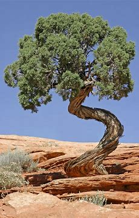

For around the past 2 years, I spent most of my time working as an arborist,( someone who is considered a tree surgeon). While I was working, I noticed which trees were more common in the Salt Lake Valley as well as other areas of Utah. In the Salt Lake Valley, I noticed more quaking aspens, blue spruce, and Ponderosa Pines. While in Southern Utah, while having similar trees, the most abundant is the cottonwood, which also has some of the biggest cottonwoods in America.
The quaking aspen is the official state tree of Utah. Withing the arborist industry, the aspen is also nicknamed the party tree because it grows very fast and then shortly after, it dies. It can grow to a maximum of 70 feet, and the wood is not recommended for fire use. They are hardy trees and for that, they are heavily sought out for landscape use.
Aspen, Quaking or TremblingThe blue spruce is a tree that native to Utah as well as the Rocky Mountains. These trees can grow up to 75 feet tall and be 16 feet wide. Unlike the quaking aspens, these trees grow very slowly and also live much longer. These trees also require good soil and good temperature for them to be able to grow.
Spruce, Blue or Colorado BlueThe Ponderosa Pine is one of the biggest trees that grow naturally in Utah. They can reach a height of around 330 feet and be 13 feet in diameter. These trees are drought resistance and has very thick bark that helps these trees become a little more fire resistant. These trees are the recommended pine to plant here in Utah.
Source: 
| Tree Name | Tree Type | Avg Tree Size | Wood Uses |
|---|---|---|---|
| Quaking Aspen | Deciduous | H: 70 FT W: 10 IN | Pallets and crates |
| Blue Spruce | Conifer | H: 75 FT W: 10-20 FT | Lumber and Poles |
| Ponderosa Pine | Conifer | H: 165 FT W: 42 IN | Millwork and Railroad Ties |